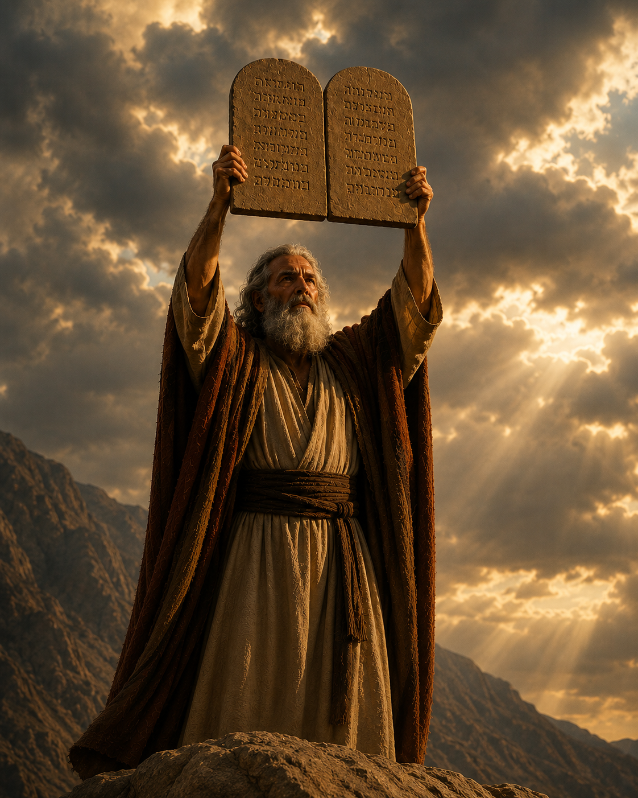

Quem é o Autor da Bíblia?
A Bíblia é a Palavra de Deus. Embora tenha sido escrita por aproximadamente 40 autores humanos ao longo de cerca de 1.600 anos, em três idiomas (hebraico, aramaico e grego) e em três continentes, seu verdadeiro Autor é Deus. Profetas, reis, pescadores, médicos e pastores foram inspirados por Deus para registrar Sua mensagem à humanidade.
Pedro afirma que "nenhuma profecia da Escritura provém de particular elucidação; porque nunca jamais qualquer profecia foi dada por vontade humana; entretanto, homens santos falaram da parte de Deus, movidos pelo Espírito Santo" (2 Pedro 1:20-21).
Por isso devemos crer nela: porque "toda a Escritura é inspirada por Deus e útil para o ensino, para a repreensão, para a correção, para a educação na justiça" (2 Timóteo 3:16-17). Antes mesmo de Jeremias nascer, Deus já o havia consagrado como profeta (Jeremias 1:4-5) — sinal de que a Palavra vem do Eterno, não do homem.
"Toda a Escritura é inspirada por Deus."2 Timóteo 3:16
Revelação Geral & Revelação Especial
Deus se faz conhecer de duas maneiras complementares. Na natureza, todos os povos podem perceber Sua existência e Seu poder. Mas para conhecer Seu caráter, Seu plano de salvação e Sua vontade, Ele falou de modo direto, por meio dos profetas e, supremamente, em Seu Filho.
Tipo IRevelação Geral
"As suas qualidades invisíveis... claramente se reconhecem desde o princípio do mundo, sendo percebidas por meio das coisas que foram criadas." (Rm 1:20)
- A Criação e a beleza da natureza
- A consciência humana
- A história e a providência
- Disponível a todos os povos, sem exceção
Tipo IIRevelação Especial
"Havendo Deus, outrora, falado... pelos profetas, nestes últimos dias nos falou pelo Filho." (Hb 1:1-2)
- A Bíblia — Sua Palavra escrita
- Os profetas e visões
- Jesus Cristo — a revelação plena
- O Espírito Santo iluminando o coração
No princípio era o Verbo, e o Verbo estava com Deus, e o Verbo era Deus.João 1 : 1
Cristo — o Personagem Principal
Toda a Bíblia aponta para uma única Pessoa: Jesus Cristo. No Antigo Testamento, Ele é prometido em sombras, sacrifícios e profecias. Nos Evangelhos, Ele é revelado. Nos demais livros do Novo Testamento, Ele é proclamado e esperado em Sua segunda vinda.
"Examinais as Escrituras, porque julgais ter nelas a vida eterna, e são elas mesmas que testificam de mim" (João 5:39). Cristo é o Verbo eterno, a Vida e a Luz dos homens (João 1:1-4). Ler a Bíblia sem encontrar Jesus é deixar de compreender sua mensagem central.
"Eu sou o caminho, e a verdade, e a vida; ninguém vem ao Pai senão por mim."João 14:6
A Palavra acima das tradições
Jesus repreendeu severamente os fariseus que invalidavam o mandamento de Deus para guardar sua própria tradição: "Em vão me adoram, ensinando doutrinas que são preceitos de homens. Negligenciando o mandamento de Deus, guardais a tradição dos homens" (Marcos 7:7-9).
As opiniões humanas mudam com o tempo e a cultura. A Palavra de Deus, porém, permanece para sempre (Isaías 40:8). Por isso, devemos sustentar o princípio da Sola Scriptura: a Bíblia é a regra única e suficiente de fé e prática. Toda doutrina, todo costume e toda decisão devem ser submetidos ao "assim diz o Senhor".
Tradição
Vem dos homens, varia conforme a época e pode contradizer a vontade de Deus.
Opinião
É subjetiva e mutável. O coração humano é enganoso (Jr 17:9) — não pode ser o juiz final.
Escritura
É a voz imutável de Deus. Permanece eternamente e julga toda tradição e opinião.

Como testar um autor bíblico
Nem toda voz que afirma falar por Deus é digna de confiança. As próprias Escrituras nos ensinam critérios objetivos para discernir o verdadeiro profeta do falso. Jesus disse: "pelos seus frutos os conhecereis" (Mateus 7:16), e Isaías declarou: "À lei e ao testemunho! Se eles não falarem desta maneira, jamais verão a alva" (Isaías 8:20).
Os 66 Livros da Bíblia
39 no Antigo Testamento · 27 no Novo Testamento · Uma só mensagem
Antigo Testamento
39 livros · da Criação à promessa do Messias
Novo Testamento
27 livros · o Messias revelado e a Igreja em marcha
Maravilhas da Palavra
O Salmo 119 é o maior capítulo da Bíblia — 176 versículos exaltando a Palavra de Deus. Já Salmo 118:8 é considerado o versículo central das Escrituras: "Melhor é confiar no Senhor do que confiar no homem."
A mensagem é a Salvação
Para que serve a Bíblia? Para revelar o amor de Deus e mostrar ao ser humano o caminho da salvação em Jesus Cristo. "Estas, porém, foram registradas para que creiais que Jesus é o Cristo, o Filho de Deus, e para que, crendo, tenhais vida em seu nome" (João 20:31).
Ela nos instrui (2 Tm 3:16-17), nos consola (Rm 15:4), nos santifica (Jo 17:17), nos prepara para a vinda do Senhor e nos torna aptos a "toda boa obra". Compartilhar essa mensagem com um amigo é o próximo passo natural de quem foi alcançado por ela.
"A tua palavra é a verdade."João 17:17
Presenteie uma Bíblia
Escolha um amigo, um familiar ou um vizinho. Dê a ele uma Bíblia de presente e ofereça um estudo bíblico. Que aquilo que aqueceu o seu coração também transforme o coração de mais alguém.
"De graça recebestes, de graça dai."— Mateus 10:8